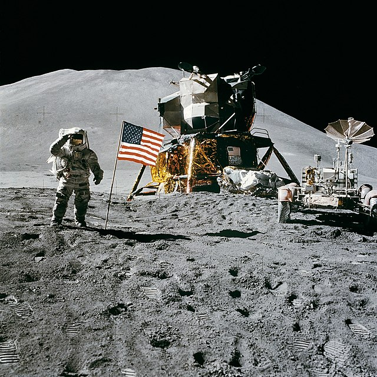
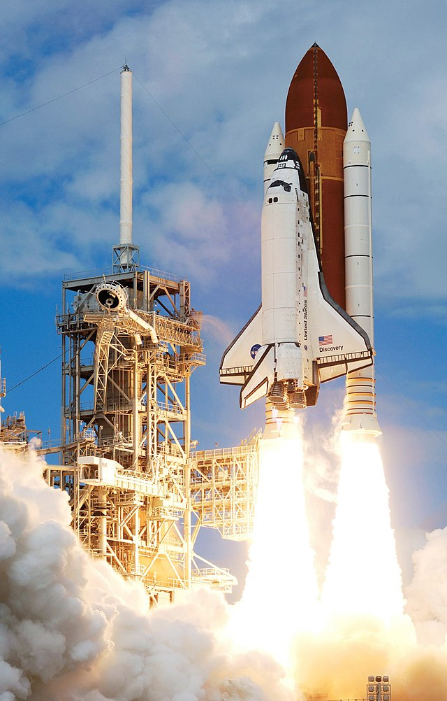
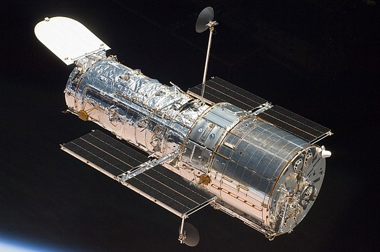
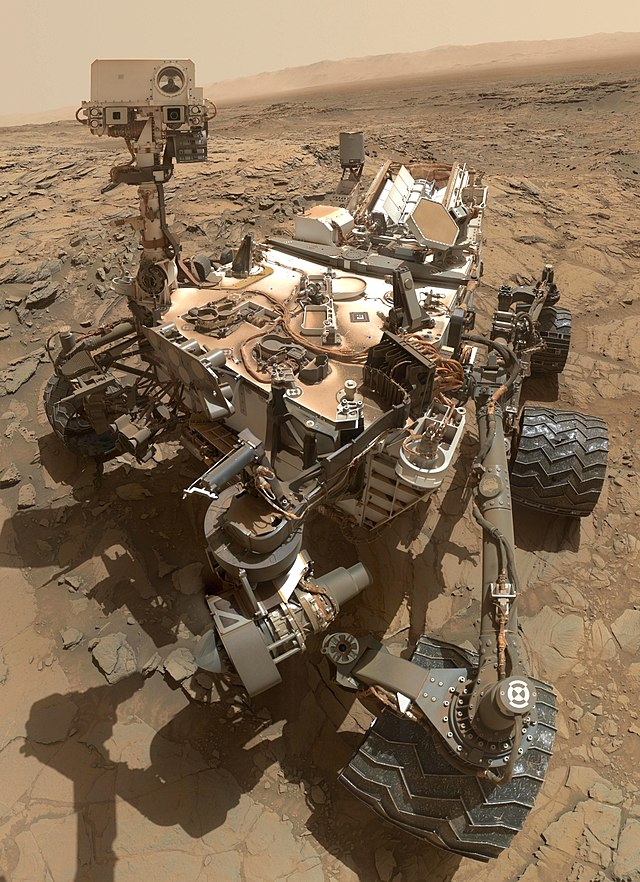
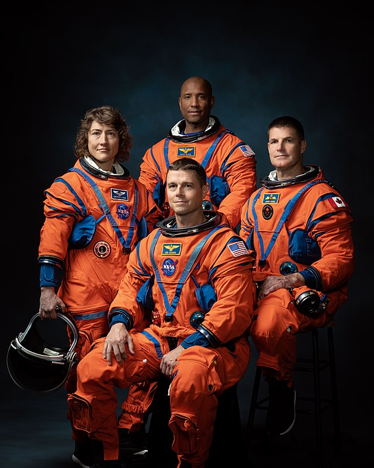

Programma Apollo (1961-1972)
Il programma Apollo è stato il progetto della NASA che ha permesso all'uomo di sbarcare sulla Luna. La missione Apollo 11 del 1969, che ha visto Neil Armstrong diventare il primo essere umano a camminare sulla superficie lunare, è una delle conquiste più importanti nella storia dell'umanità. Le missioni Apollo hanno fornito una straordinaria quantità di conoscenze scientifiche sulla Luna,
ispirando generazioni e aprendo la strada a futuri viaggi spaziali.

Programma Space Shuttle (1981-2011)
Il programma dello Space Shuttle è stato il primo sistema di lancio riutilizzabile e ha rappresentato una nuova era per il volo spaziale umano. Con oltre 130 missioni, gli shuttle hanno contribuito al lancio di satelliti, alla costruzione della Stazione Spaziale Internazionale (ISS) e a importanti ricerche scientifiche. Sebbene le missioni abbiano avuto momenti di grande successo, due tragedie,
il Challenger e il Columbia, hanno ricordato i rischi e la complessità del volo spaziale.

Hubble Space Telescope (1990 - presente)
L'Hubble è uno dei telescopi spaziali più celebri mai lanciati. Orbita attorno alla Terra e ha fornito immagini straordinarie dell'universo, contribuendo a scoperte fondamentali in astronomia e astrofisica. Grazie a Hubble, gli scienziati hanno potuto calcolare con maggiore precisione
l'età dell'universo e hanno esplorato pianeti extrasolari e galassie lontane.

Mars Rover Missions (Spirit, Opportunity, Curiosity, Perseverance)
I rover marziani della NASA hanno contribuito a un'esplorazione senza precedenti del Pianeta Rosso. Spirit e Opportunity hanno superato di gran lunga le aspettative, scoprendo prove di acqua passata su Marte. Curiosity continua a esplorare il cratere Gale, studiando l'abitabilità del pianeta. Perseverance, arrivato nel 2021, cerca segni di vita antica e
raccoglie campioni che potrebbero essere riportati sulla Terra.

Missione Artemis (2020 - futuro)
La missione Artemis segna il ritorno dell'umanità sulla Luna, con l'obiettivo di stabilire una presenza umana sostenibile entro la fine del decennio. Artemis I ha già completato una missione senza equipaggio, mentre Artemis II porterà astronauti in orbita lunare. Artemis III vedrà il primo sbarco con equipaggio sulla superficie lunare dopo le missioni Apollo,
includendo la prima donna e la prossima persona di colore.